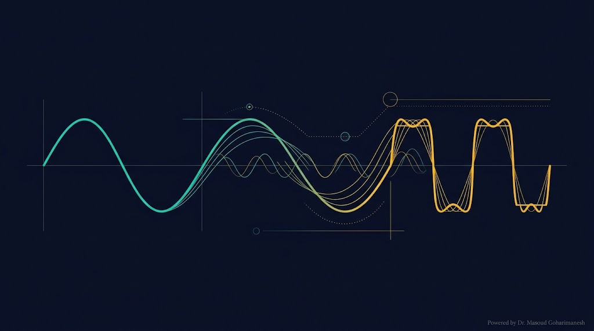
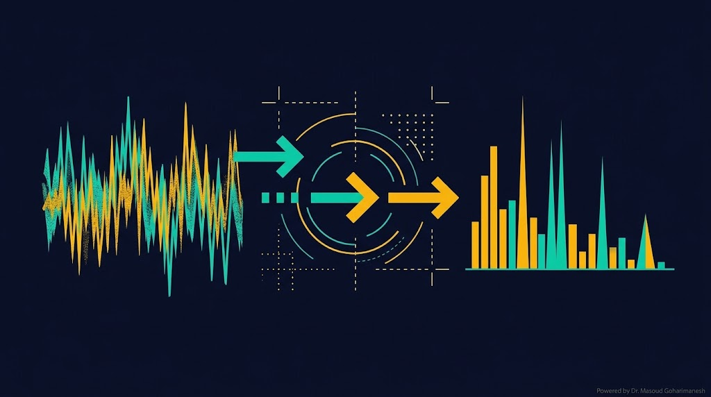
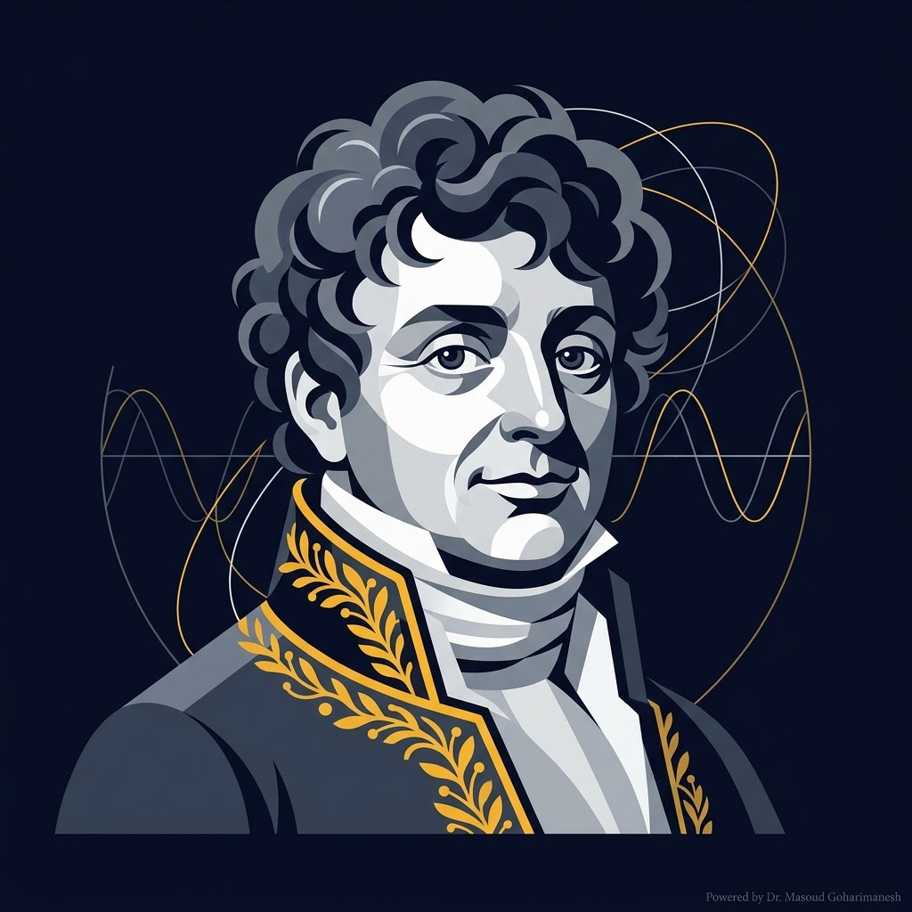

دکتر مسعود گوهری منش
دانشیار گروه مهندسی مکانیک — دانشگاه تربت حیدریه

ریاضیات مهندسی پیشرفته — جلسه ۱
دکتر مسعود گوهری منش
دانشیار گروه مهندسی مکانیک — دانشگاه تربت حیدریه
فوریه یک زبان مشترک است که در همه شاخههای مهندسی و علوم ظاهر میشود. او به ما یاد داد هر سیگنال پیچیده، ترکیبی از اجزای ساده است.


ریاضیدان و فیزیکدان فرانسوی که در سال ۱۸۲۲ کتاب معروف خود را منتشر کرد: «Théorie analytique de la chaleur»
مخالفت بزرگ: لاپلاس و لاگرانژ با ایده او مخالفت کردند، چون باور نداشتند توابع ناپیوسته را بتوان با توابع پیوسته (سینوس/کسینوس) بازنمایی کرد. اما فوریه درست میگفت.
تابعی است که خود و مشتق آن در فواصل تکهای، پیوسته باشند.
تابعی که با افزودن مقداری ثابت به متغیر آن، شکل تابع تکرار میشود.
T = دوره تناوب اصلی
هر تابع متناوب تکهای هموار را میتوان به صورت مجموع ترکیب خطی از توابع سینوس و کسینوس نوشت.
فرم اولیه:
که در آن $\omega$ فرکانس زاویهای است:
فرم استاندارد نهایی:
فقط $a_0$ و $a_n$ محاسبه میشوند؛ $b_n = 0$.
$a_0 = 0$ و $a_n = 0$؛ فقط $b_n$ باقی میماند.
نمودار متقارن نسبت به محور y
مثال: $|x|$, $x^2$, $\cos(x)$
نمودار متقارن نسبت به مبدأ
مثال: $x$, $x^3$, $\sin(x)$
گاهی تابع در نگاه اول زوج یا فرد به نظر نمیرسد، اما با انتقال یا تغییر متغیر به تابع زوج/فرد تبدیل میشود. مثال: $f(x) = x$ در بازه $(0, 2\pi)$ اگر به مرکز بازه منتقل شود، به تابع فرد تبدیل میشود.
با تعریف $u = x - \pi$، بازه $(0, 2\pi)$ به $(-\pi, \pi)$ منتقل میشود:
یک ربات را در نظر بگیرید که باید روی مسیر مربعی حرکت کند. در حالت ایدهآل، در گوشهها تغییر ناگهانی سرعت رخ میدهد که به موتورها ضربه (Jerk) وارد میکند.
💡 راهحل فوریه: با افزایش N، مسیر ربات به یک منحنی نرم و پیوسته تبدیل میشود که در آن مشتق سرعت (شتاب) و مشتق شتاب (Jerk) محدود و پیوسته است. نتیجه: عمر بیشتر موتورها و حرکت روانتر.
روی هر کارت کلیک کنید تا انیمیشن همگرایی و توضیح آن را ببینید.
انرژی سیگنال در حوزه زمان = انرژی در حوزه فرکانس
با $f(x) = x$:
با $f(x) = x^2$:
نمودار زیر همگرایی سری معروف لایبنیتس به $\pi/4$ را نشان میدهد.
روی هر کارت کلیک کنید تا روش حل و انیمیشن همگرایی را ببینید.
اگر تابع تناوبی نباشد و $T \to \infty$، به انتگرال فوریه میرسیم:
روی دکمه میکروفون کلیک کنید. پس از ۵ ثانیه ضبط، سیگنال با FFT تحلیل و فرکانس پایه F0 برای تشخیص جنسیت استخراج میشود.
مرورگر اجازه دسترسی به میکروفون را درخواست میکند.
سیگنال زمان
طیف فرکانسی (FFT)
% Fourier Series — از جزوه دکتر گوهری منش clc; figure(1); clf; hold on x = linspace(0, 10*pi, 1000); N = 40; f = 4/3*pi^2; for n = 1:N an = 4/n^2; bn = -4*pi/n; f = f + an*cos(n*x) + bn*sin(n*x); end plot(x, f, 'linewidth', 3) grid on
# Fourier Series — Python + Google Colab import numpy as np import matplotlib.pyplot as plt x = np.linspace(0, 10*np.pi, 2000) N = 40 f = (4/3) * np.pi**2 * np.ones_like(x) for n in range(1, N+1): f += 4/n**2*np.cos(n*x) - 4*np.pi/n*np.sin(n*x) plt.plot(x, f, linewidth=2.5, color='#ffb700') plt.savefig('fourier.png', dpi=600) plt.show()
در پروژه پایانی، کدها در Google Colab اجرا و تصاویر با dpi=600 و فرمت PNG ذخیره شوند.
ارسال تمرینها:
m.goharimanesh@gmail.com
Subject الزامی:
[Advanced Engineering Mathematics] HW01 - نام و نام خانوادگی - شماره دانشجویی
تجزیه تابع متناوب
$a_0$, $a_n$, $b_n$
زوج، فرد، مخفی
انرژی زمان=فرکانس
مسیر نرم و پیوسته
FFT + تشخیص F0
جلسه ۲ — FFT، فیلتر و کانولوشن
با زیبایی ریاضیات همراه باشید 🌟
دکتر مسعود گوهری منش
دانشیار گروه مهندسی مکانیک — دانشگاه تربت حیدریه